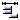
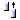
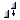
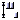

|
6.4 デザインフレームワーク(design framework) メインコントロールパネルに戻る(exit to control panel) レイアウトコンポーネント (layout components) セレクト、移動、エディト コンポーネント (select、move、edit components) 複写、コピー、貼り付け (duplicate、copy、paste) コンポーネント優先 (component preference) Java ソースコード一覧 (Java source code) Hash 変数のエディター (Hash & SysHash editor)
【コントロールパネル】の中に デザイン ( デザインモードへ )をクリックするか，フォームを選んで右クリックし，デザイン (design)を選択します。
コントロールパネルへ (exit to control panel) · コンソールへ (back to console)：デザイン画面を離れ，コントロールパネルに戻ります。 · 修正の保存 (save modified)：モジュール設計の段階，修正の保存 (save modified)を実行するまでの修正が保存されていません。その為，比較的に複雑な修正を行う時に，お勧めとして，修正のステップごとに保存しておくことです。
レイアウトコンポーネント (layout components) § コンポーネントツールバー (components toolbar)：マウスでコンポーネントを選択した後に，フォーム上に移動します。十字模様が表示され，適当な位置にクリックするだけでコンポーネントの位置が設定されます。 § データフィールド (data field)： データソースからデータフィールドを選択し，直接にフォーム( form) 上にドラッグし，ダイアログボックスが表示されます：
· 位置 (position)：コンポーネントが置かれる位置。 · リンクデータソース (link data source )：選択されたデータソースの枠位置。 · コンポーネント名前 (component name)：コンポーネント名前。 · ラベル放置 (put label at)：ラベルを使うかどうか，使用する位置。 o ナン (none)：ラベルコンポーネント必要なし。 o 左 (left)：コンポーネントの左上にラベル放置。 o 上 (top)：コンポーネントの眞上にラベル放置。。 · ラベル (label)：ラベルコンポーネント (label component)を使用する場合，ラベルに内容を書き込みます。 · コンポーネントタイプ (component type)：コネクション枠コンポーネントタイプの選択。 o エディトコンポーネント (Edit component) o チェックボックスコンポーネント (CheckBox component) o ラジオグループコンポーネント (RadioGroup component) o リストボックス (ListBox component) o コンボボックスコンポーネント (ComboBox component) o スライダーコンポーネント (Slider component)
§ データソース (data source)：一つデータソースによるすべてのデータフィールドをフォーム(form) 上に必要とする時に，直接にデータソースを選択し，フォームのスタートポイントにドラッグ (drag)し，ドロップ (drop)するとレイアウトヴィザード (layout wizard)が表示されます：
· 配置 (layout components) o スタート位置 (start position)：スタート位置設定。 o コンポーネント間の隙間 (gap between component)：コンポーネント間のギャップの設定。 o ラベル位置 (label position)：ラベルを使うかどうか，使う場合の位置。 o 配置位置 (layout position)：コンポーネントレイアウト方向。
· フィールド (fields)：フィールドに関連するコンポーネントを選択します。 o 選択 (select)：このフィールドにコンポーネントを設置するかどうか。 o フィールド名 (field name)：テーブルのフィールド名。編集不可能。 o コンポーネント名 (component name)：コンポーネント名，編集可能，重複不可。 o コンポーネントタイプ (component type)：ドロップリストからコンポーネントを選択します。
コンポーネント選択、移動、エディター (select、move、edit components) · 選択 (select)： o 単一コンポーネント：マウスをコンポーネント上に移動された時に，八つの色枠が現れ，このコンポーネントは選択された状態。 o 多数コンポーネント：マウス左キーを押したまま，選択範囲を引き，マウスをリリースした後，コンポーネントは緑枠で表示されます。 · 移動 (move)： o 単一コンポーネント：マウスでコンポーネントを移動するかキーを押したまま Ctrl プラス ←↑↓→ キー，コンポーネント位置を微調整ができます。 ·
多数コンポーネント：多数コンポーネントを選択し，マウスでコンポーネントを移動するかキーを押したま ま Ctrl プラス ←↑↓→ キー，コンポーネント位置を微調整ができます。 · エディット (edit)： o 単一コンポーネント：選択されたコンポーネントの場合，マウスをダブルクリックでプロパティに入り，或いは右キーをクリックし，メニューからプロパティに入ります。 o 多数コンポーネント：多数コンポーネントを選択し，右キーで多数コンポーネントサポート機能に入ります。
§ 調整 (alignment)： 多数コンポーネントを選択した後，この機能を使うことができます。 ·
アンドウ (undo) · フォーム左に調整 (alignment to form left) ·
フォーム上に調整 (alignment to form top) ·
フォーム右に調整 (alignment to form right) ·
フォーム底に調整 (alignment to form bottom) ·
水平に左へ (horizontal left) ·
水平に中心へ (horizontal center) ·
水平に右へ (horizontal right) · 水平置於視窗中間 (horizontal form center)  ·
水平平均分配距離 (horizontal equal space) · 垂直に上へ (vertical top)  ·
垂直に中心へ (vertical center) · 垂直に下へ (vertical bottom)  · 垂直にフォーム中心へ (vertical form center)  ·
垂直に平均距離配分 (vertical equal space) · 削除(delete)
コンポーネント複製、コピー、貼り付け (duplicate、copy、paste) · 複製 (duplicate)：同じフォームの上に同じのコンポーネントを複製する時に，複数が可能です。 · コピー (copy)：コンポーネントをコピーします。コピーされたコンポーネントを他のフォームかアプリへの移動が可能です。 · 貼り付け (paste)：コンポーネントを貼り付けます。 · 削除 (delete)：選択されたコンポーネントを削除します。
コンポーネント好み設定 (component preference)
デザインナーは設計・開発する時に (layout component)，システムはデフォルトプロパティでコンポーネントレイアウト(大きさ、外見、フォント)を出します。デザインナーは編集された後のコンポーネントを右キーで【個人好み保存】で保存し，そのプロパティをデフォルトプロパティに設定し，次実行する時に，今回保存したプロパティをデフォルトプロパティとして配置されます。
§ フォーム (forms)
· フォームプロパティ (form properties)：フォームプロパティ設定ページへ。 · 実行 (run)：フォーム実行テスト。 · デザイン (design)：ランモードの時，これをクリックし，デザインモードに戻り。
Java™ ソースコード一覧 (Java™ source code)
ソースコード一覧キーをクリックすると ，システムは現時点のデザインを保存し， Java™ ソースコードを一覧フォームに表示します。ソースコードはフォーム中の修正が不可能になっています。 jLIVE Builder™ において，ソースコード（Java™ source code） を加えることが可能です。次のタグ //<reserve> と //</reserve> でソースコードを括弧します。
§ リロードイメージ (reload images)：デザインする時，修正、削除、 preloadimages 或いは images などにイメージ追加 (image file)する時に，必ずリロードしなければなりません。
Hash 変数エディター (Hash & SysHash editor) § Hash & SysHash エディター (Hash & SysHash editor)：デザインモード (design mode) に限って有効であり，アプリごとに独自の Hash と SysHash 変数を持ち，変数が必要になるかもしれないので，テストの為，エディターに設定しておきます。 1. キー (key)と値 (value)を入力します。 2. 保存マークをクリックします。 3. メッセージボックスが表示されたら，「はい」をクリックします。
Copyright © 2001~ 2004 Probe Technology . All Rights Reserved. Questions, comments, and suggestions to Service@probe.com.tw |